Enid Blyton was born in London in 1897. She loved books, gardens and — most of all — animals. She had many dogs during her life, and her love for dogs is why Timmy is such an important character.
She wrote more than 700 books for children. Her most famous series is The Famous Five — 21 books about the same four cousins and their dog. She also wrote The Secret Seven, Malory Towers and the little bear Noddy.
Her books have sold more than 600 million copies. The book you are about to read — Five on a Treasure Island — is the very first Famous Five book, written in 1942. This lesson follows the Vereshchagina Reader 7 adaptation in 12 chapters.
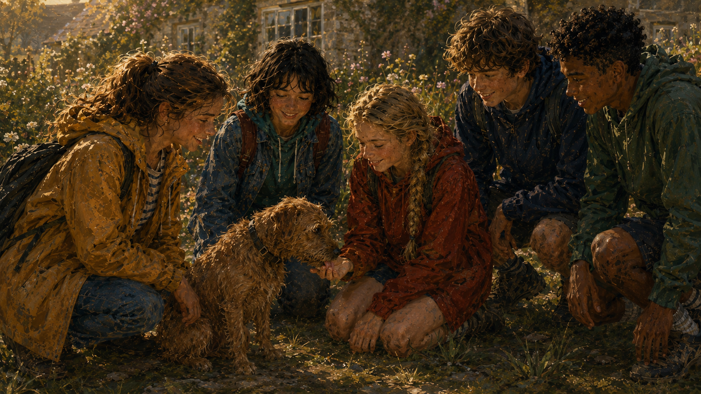
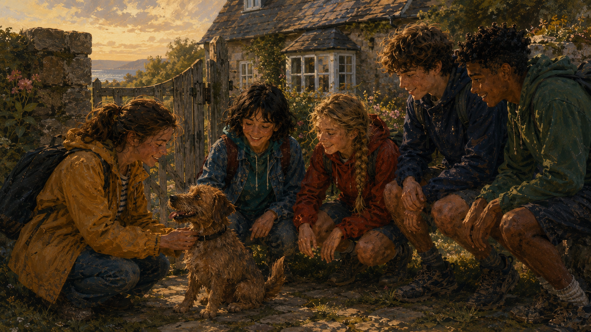
"Mother," said Julian one morning at the breakfast table, "have you heard about our summer holidays yet? Can we go to Polseath as usual?"
"I'm afraid not," said his mother. "It's all full there. They are quite full up this year, so we must go somewhere else."
"Oh, Mother!" cried the three children at once. Polseath, with its yellow sand and the warm pools between the rocks, was where they had gone every summer since they were small.
"Cheer up," said Daddy, lowering his newspaper. "I have been thinking. Why don't the three of you go to your Uncle Quentin's for the summer? He has a girl of his own, you know — your cousin Georgina. She is eleven, just the same age as Dick."
"We have never even met Uncle Quentin, Daddy," said Dick carefully. The three children looked at each other. There was something in the way Mother and Daddy spoke of this unknown uncle that did not sound easy.
"Yes, well," said Daddy slowly. "He is my brother. He is a clever man — a scientist. But he does not know much about children, and he has a quick temper. He works all day in his study with big books and will not have a sound in the house. Still, your Aunt Fanny is kind, and the sea at Kirrin is as good as any beach in England. And they can do with the little bit of money we would pay them for your keep."
"What about Georgina?" asked Anne, who had been quiet so far.
"Georgina is a funny little girl," said Mother. "She has no brothers or sisters, no friends, and she has been spoilt in some ways and left too much alone in others. Perhaps three cousins will do her good. Aunt Fanny thinks so too. Well — shall it be Kirrin, then?"
"Yes!" said all three children at once, because an unknown uncle and a cousin called Georgina still sounded much better than staying in London while Mother and Daddy were away. And that was how, three weeks later, Julian, Dick and Anne found themselves in a taxi, driving up a dusty lane in Kirrin, with the smell of the sea coming through the open window and their suitcases bumping about on the floor.
Kirrin Cottage stood on a low cliff above a wide blue bay. It was not really a cottage at all. It was a strong old house built of white Cornish stone, with small deep windows and a heavy wooden door. The garden was full of flowers running wild between grey rocks. Aunt Fanny came running out before the taxi had even stopped.
"Welcome to Kirrin!" she cried. She was a tall, kind-faced woman in a cotton apron, and she hugged them all one by one. "I am so glad you are here at last. Come in, come in — the kettle is on. Where is Georgina? Oh dear, that girl! I told her to wait at the gate, and she has gone off somewhere. Well, you will meet her at tea, I hope."
Aunt Fanny took them into a cool stone hall that smelled of fresh bread and sea air. A door at the far end opened and Uncle Quentin came out — tall, thin, with dark untidy hair and heavy black eyebrows. He looked at the three children as if he were not quite sure what to do with them. He said, "How do you do," in a deep, serious voice, and shook hands, and went back into his study at once. From behind the closed door the children heard the scratching of a pen.
"Your uncle is writing a very important book," Aunt Fanny said quietly, pouring the tea. "It has long sums in it, you know. He must not be disturbed. Promise me — nobody goes into the study. Nobody. Not even for a minute."
"We promise," said Julian for all three.
They had tea with Aunt Fanny — scones with butter and strawberry jam — and they were nervous and quiet, as children often are in a new house. Georgina did not come to tea. She did not come to supper either. It was almost dark when at last the back door banged, and a small, thin child in blue cotton shorts and a boy's shirt walked into the kitchen. Her hair was cut short and curly, like a boy's. Her face was brown from the sun, with a sprinkling of freckles across the nose. Her blue eyes were serious under a scowling pair of dark eyebrows exactly like her father's.
She did not say hello.
"This is your cousin Georgina," said Aunt Fanny, trying to sound cheerful. "Georgina, these are—"
"My name is George," said the thin child, in a hard, low voice. "I am not Georgina. If you call me Georgina, I shall not answer. Not now. Not at supper. Not ever."
Julian looked at her. He was the oldest and he did not want trouble on the first evening.
"All right, George," he said, simply. "I am Julian. This is Dick. This is Anne. Are you glad we are here?"
George looked at him with her serious blue eyes. "Maybe," she said at last. "It depends."
Then she sat down and ate her supper without looking at anybody. Nobody could get another word out of her that evening.
The next morning the smell of bacon and eggs was so strong that even Anne, who liked a long sleep, came running down the stairs. George was already at the breakfast table, buttering a piece of toast. She did not smile at the three cousins, but she did not scowl either, which was already a little better than the evening before.
"George, dear," said Aunt Fanny, "I want you to take your cousins down to the bay this morning. Show them where to bathe. Show them the best rocks for a picnic."
"I am going fishing," said George shortly.
Uncle Quentin looked up from his newspaper for the first time. "You are not," he said, in a quiet voice that was more frightening than a shout. "You are going to show your cousins the bay and the island. You are going to show a few good manners, for once. Do you hear me?"
George said nothing. But after breakfast she stood up without a word and walked out of the garden gate. The three cousins followed her. She did not look back, but she did not go so fast that they could not keep up.
At the end of the garden a steep path ran down between flat grey rocks. The sea opened out below them, pale and blue and very big. And in the middle of the bay, rising out of the water, was a small rocky island with the broken grey walls of a castle on it, and a single standing tower.
George stopped at the top of the path. Her blue eyes shone for the first time.
"That is Kirrin Island," she said, in a voice that was suddenly proud. "It belongs to me. My mother gave it to me when I was six, with a lawyer and a paper and everything. Nobody can set foot on it without my permission. Nobody."
Anne stared at the island. "A whole island — just for one girl?"
"Just for one girl," said George. For the first time since they had met her, there was almost a smile at the corner of her mouth.
— End of Chapter 1 —
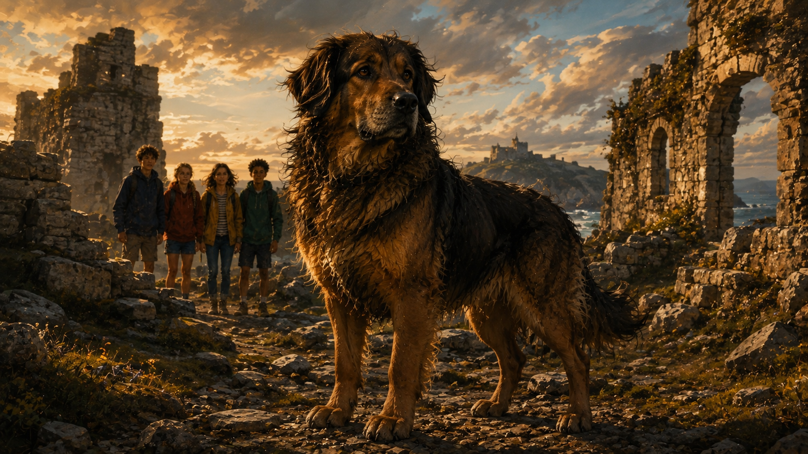
The three cousins stared at George in the greatest surprise. George stared back at them.
"What do you mean, it belongs to you?" said Dick at last. "You can't own an island, George. You are only eleven. You are just boasting."
George's eyes went very dark. "I am not boasting," she said. "You ask Mother. If you are not going to believe me, I will not tell you another word. I do not tell lies. I think it is being a coward if you do not tell the truth, and I am not a coward."
Julian remembered what Aunt Fanny had told them in the garden the night before — that George was absolutely truthful. He looked at her blue, serious eyes and knew it was so.
"Of course we will believe you, George," he said quickly. "Only, it does sound a bit extraordinary. Children do not usually own islands, even funny little ones like that."
"It is not a funny little island," said George at once. "It is lovely. There are rabbits on it as tame as can be. The big cormorants* sit on the rocks on the far side. All kinds of gulls go there. And the castle is wonderful, even if it is all in ruins."
"Then please tell us," said Dick, who was now listening very carefully, "how it can belong to you."
George sat down on a flat warm rock. The three cousins sat down round her. Timmy would have sat down too, but Timmy had not yet come into the story.
"Years and years ago," said George, "my mother's people — the Kirrins — owned nearly all the land round here. The village. The farms. The cliffs. The bay. And the island. That is why it is called Kirrin Island, and the bay is Kirrin Bay, and this house is Kirrin Cottage. Then the family got poor. They had to sell most of it, piece by piece, to pay for things. But they could never sell the little island, because nobody wanted it. The castle is only old grey stones. There is no good land for farming. There is not even a safe place to land a boat, unless you know the rocks very well."
"So who owns it now?" asked Anne.
"All that is left of what Mother's people owned is three things," said George. "This house, Kirrin Cottage. A small farm a little way inland. And Kirrin Island. Mother says that when I am grown up, the island will be mine. She says she does not want it now, so she has sort of given it to me already. It is my own private island. Nobody is allowed to set foot on it without my permission. Nobody."
The three cousins stared at her. They believed every word, because any fool could see George was telling the truth. Fancy having a whole island of your very own!
"Oh George — I mean George, not Georgina — I think you are the luckiest girl in the world," said Dick. "Will you take us there one day? Please? We cannot imagine how much we would love it."
For the first time, George looked pleased. "Perhaps," she said. "I have never taken anyone there before. Boys and girls from the village have begged me to let them come. But I do not like them, so I never have."
Anne looked across the pale blue water at the little island, with its single tower standing up above the broken castle walls. "How do you get across?" she asked.
"Only by boat," said George, "and only if you know the way. The water is very deep and very cold. There are rocks all round the island, just under the water. If you row a boat the wrong way, you will hit a rock and go down. It is a dangerous bit of coast. There are old wrecks** all along here, on the sea floor."
"Wrecks?" cried Julian, his eyes shining. "Real wrecks? I have never seen a wreck in my life."
"They are not easy to see," said George. "Most of them are far below the water. There is one great wreck off the point of Kirrin Island, from a hundred and fifty years ago. A ship that belonged to my mother's family — my great-great-grandfather, who was a sailor. His ship went down one stormy night just at the mouth of the bay. But that is a different story. I will tell it another time."
And then, before anyone could ask about the wreck, there was a sudden bark from the top of the sand dunes behind them — a loud, happy, mad bark — and a big brown-and-white shape came galloping down over the sand. His head was too large. His ears were too long. His tail was far too long and it was wagging so hard that his whole back half was wagging too. He had a wide, friendly red mouth with a pink tongue hanging out, and he was running straight at George.
"Timothy!" cried George, and she was laughing and crying at the same time. The big dog knocked her flat on her back on the sand and licked her face from chin to forehead. "Oh, Tim — down, Tim — these are my cousins — down!"
"What a dog!" said Dick, who had never seen anything so happy and so uncoordinated in his life.
Timothy was not a handsome dog. He was the wrong shape. His head was too big for his body, his ears too pricked, his legs too long. It was quite impossible to say what kind of a dog he was supposed to be. He was simply, as George said, a mongrel. But he was so warm and so wild with joy that the three cousins loved him at once.
"Where does he live?" asked Anne, stroking his big head. "Does he sleep at Kirrin Cottage with you?"
George's bright face went dark for a moment.
"No. He lives with Alf the fisher-boy, down at the harbour. I pay Alf a shilling a week — all my pocket money — to feed him and keep him in the shed by his boat. Father will not have him in the house."
"Why not?" asked Dick, surprised.
"Because when Tim was a puppy he chewed up everything he could find," said George. "I found him on the moors last year, when he was tiny. I brought him home. At first Mother liked him. But then he chewed up a new rug, and Mother's best hat, and some of Father's papers from the study. And he barked at the postman, and he barked at the baker, and he barked at every car that came up the drive. Father said he was a hooligan and sent him away. I cried for a whole day. But I do not cry now, because boys do not cry, and I want to be like a boy. So I took Tim to Alf, and Alf has kept him for me ever since. I see him every single day. Sometimes twice."
Julian looked at the big dog, and at George, and then at the big dog again. For the first time, he understood what Aunt Fanny had meant when she had said, in her quiet voice, that George had no friends.
"Well," he said, "Tim is a splendid fellow and we will keep your secret, George. We swear. Will you not come with us for a walk, now, and show us the little way down to the harbour?"
George looked at the three friendly faces of the cousins, and at Tim's wide-open loving brown eyes, and something inside her — something that had been locked for a long time — came open.
"All right," she said. "Come on, Timothy. We will show them."
And so they went, four children and one happy mad dog, down the little sandy path towards the sea. By the time they reached the harbour wall, George was laughing out loud for the first time in a year.
* cormorant — a large black sea-bird (баклан).
** wreck — a ship broken under water.
— End of Chapter 2 —
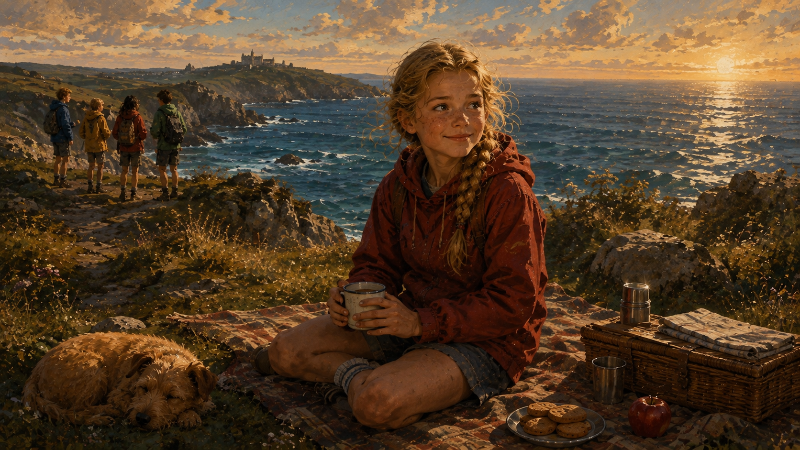
After breakfast the next morning, the four children went down to the little sandy cove below Kirrin Cottage for a swim. George, in a navy-blue bathing suit, was the strongest swimmer of them all. She could dive from the top of a rock and come up thirty feet further out, and she could swim on her back and on her front and under water. Timothy went in too, barking furiously at every wave, swimming in big happy circles, swallowing enough sea water to fill a bucket.
"George, you swim like a fish!" shouted Dick, splashing after her.
"I have swum since I was four," said George shortly, as if it was nothing at all. But she looked pleased.
At lunch, Aunt Fanny looked at the four hungry children sitting round the kitchen table and smiled. "I have never seen so much appetite in one house in my life," she said. "Julian, dear, more potatoes? George, pass the butter to Anne, please."
Julian put down his knife and fork. "Aunt Fanny," he said carefully, "may we take a boat out this afternoon? George says she will show us Kirrin Island."
Aunt Fanny looked a little surprised. "Oh — George, dear, will you really?" she said. "You have never taken anyone out to the island, as far as I know."
"These are my cousins," said George, not looking up from her plate. "It is different."
"Well, mind you take care with the rocks," said Aunt Fanny. "And be back before tea. I shall worry if you are later than five."
"Right," said George, and that was that.
At half past two the four of them walked down to the little harbour. Alf the fisher-boy was mending a net on the wall. He grinned at George, grinned at Timothy, and nodded politely at the three cousins. He had kept George's little boat, dark blue with white trim, tied up at the end of the stone pier.
"You get in first, Anne," said George. "Sit at the back and keep still. Dick next, in the middle. Julian, at the front. Timothy — down. Down. Right."
George untied the rope, stepped lightly in, took the two oars in her brown hands, and pushed off. Her strokes were long and even. In no time at all, Kirrin Cottage was growing small on the cliff behind them, and the little grey castle on the island was growing larger ahead.
"Keep quiet now, please," said George suddenly. "I am going through the rocks."
She was leaning forward, her blue eyes fixed on the water ahead. Her mouth was set in a hard thin line. The boat went forward slowly, swinging left, then right, then left again. Below them in the clear water the three cousins could see dark shapes — great flat stones hidden only a foot or two below the surface. One scrape, and the little boat would go down.
"There," said George at last, and her shoulders relaxed. "That is the worst bit. Now look down, over the side. Do you see it?"
They leaned over the edge of the boat. The sea was very clear, and very green, and very deep. And far, far down below them, half-buried in the pale sand of the sea floor, was the long dark shape of a wreck — the ribs of an old ship, the broken stump of a mast, the shadow of a hull half-eaten by the sea.
"My great-great-grandfather's ship," said George quietly. "She went down right here, in a storm, a hundred and fifty years ago. Every man aboard was lost. And in her hold, people say, were bars of gold — ingots, brought back from a mine abroad. They have never been found."
"Could divers not get at them?" asked Dick, his nose almost touching the water.
"The water is too deep and too cold," said George. "Divers have tried. Nobody has brought up as much as a single coin. The sea has kept the gold for herself."
They sat in silence over the wreck for a long moment, Timothy for once perfectly still. Then George took up the oars again, and they went on.
The landing on Kirrin Island was difficult. There was only one place a boat could be beached — a tiny shingle inlet on the south side, protected by two great rocks that made a natural gate. George rowed in neatly between them, Julian jumped out to pull the boat up, and in another minute all four were on the island.
"Now follow me," said George, and her voice was proud. "I will show you everything."
She led them up a narrow path through long dry grass. Rabbits — small brown rabbits with white tails — looked at them without fear and did not run away. Timothy wanted to chase them, but George said "Tim!" in a sharp voice, and Timothy stopped at once and walked beside her like a soldier.
They came out into the open and the children stopped and stared. Before them rose the ruins of Kirrin Castle — broken grey walls as tall as a house, an open courtyard full of long grass, and one single standing tower, square and strong, with narrow windows and no roof. Gulls cried over it.
"It is beautiful," whispered Anne. "Oh, George — it is really beautiful."
George's face was shining. "Come up the tower," she said. "Careful — the steps are old."
They climbed up and up, round and round the inside of the tower on steep stone steps, and came out at the top. From the top of the tower they could see everything — the whole of Kirrin Bay, the little harbour, the small white shape of Kirrin Cottage on its low cliff, the far grey line of the moors behind. The wind was fresh and clean, and the sea was shining under the afternoon sun.
They sat down with their backs against the warm stone and ate the picnic Aunt Fanny had packed — thick ham sandwiches, hard-boiled eggs, apples, and a big slab of chocolate cake.
"George," said Julian suddenly, "we must come and camp here one night. We really must. Would your mother let us?"
"I will ask," said George, and for the first time the three cousins saw her give a real, wide, open smile. "I will ask tonight."
Timothy, lying across George's feet, thumped his tail against the stone.
They rowed back in time for tea, carrying with them a sunburn, an empty picnic basket, and a plan.
— End of Chapter 3 —
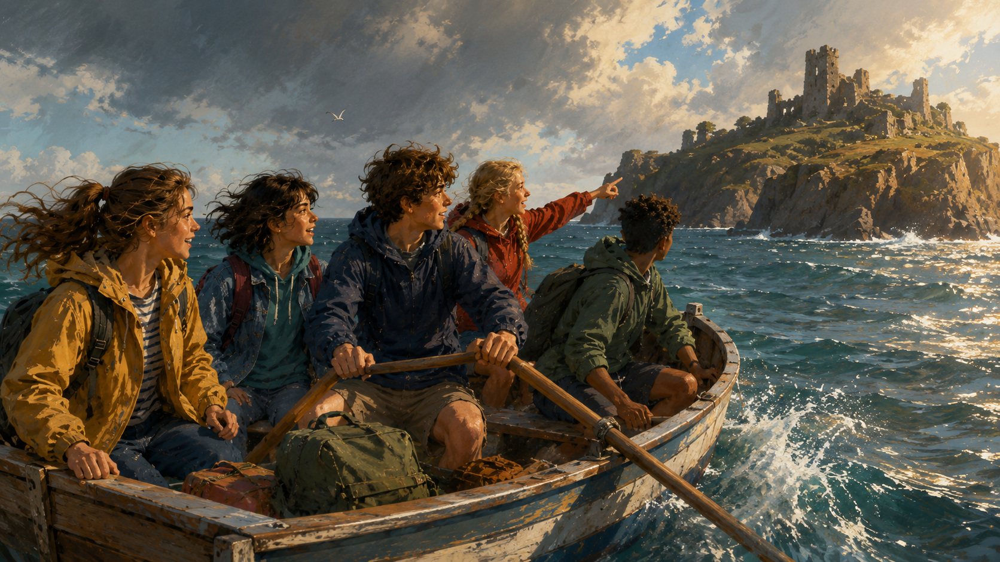
The next morning the three cousins jumped out of bed as soon as the sun came through the window. They were going to the island again — this time properly, with lunch and a kettle and a plan to stay all day. But at the breakfast table George was quiet, and her forehead had the familiar scowl.
"Honestly," she said, "I do not think we ought to go."
"George!" cried Anne, dropping her toast. "Why ever not? The sun is shining!"
"Yes," said George, "but the wind is wrong. And look at the waves out in the middle of the bay. Little white tops. That is always a bad sign on this coast. A storm is coming."
"Oh, George, it will be the biggest disappointment of our lives!" said Anne. "This is our only clear day this week. Please. Please."
George looked at the three unhappy faces round the table, and then at Timothy, who was waiting at the gate as he always did. She sighed.
"All right," she said. "But mind — if a storm comes, you are not to be a baby, Anne. You are to be sensible and keep quiet and do what I say. Do you promise?"
"I promise," said Anne, in her smallest voice.
They loaded the boat with two canvas bags of food — ham sandwiches wrapped in paper, hard-boiled eggs, apples, a bottle of lime lemonade. They fetched Timmy from Alf. Alf, mending a net on the wall, called after them:
"You won't be very long, will you? There is a storm blowing up. A bad one, I shouldn't wonder."
"We won't be long!" George called back. But her blue eyes were serious.
She rowed hard across the bay. This time she did not land at the little south inlet. She rowed round to the east side of the island, to a smaller, more hidden cove that she said was better in bad weather. There was a strip of yellow sand there, between tall rocks.
"Help me pull the boat right up high," she ordered. "If a storm comes, the sea will tear up this inlet and we do not want to lose our boat."
They dragged the boat up the sand, well above the tide line. Then George led them inland to explore. The rabbits came out of the long grass without fear and sat looking at them. Timmy wanted to chase them — his nose was quivering — but George said sharply, "Tim. No. Not these rabbits."
Timmy groaned deep in his throat and walked beside her like a soldier.
For about an hour the sun was still bright. The children explored the far side of the castle, climbed on broken walls, counted gulls' nests on the cliffs. Anne found a shell as pink as a sweet. Dick found a smooth round stone and put it in his pocket.
Then, quite suddenly, the sky changed.
Dick noticed it first. "Look at those clouds," he said. "Where did they come from?"
The sky above the island had gone deep grey, almost purple. A great block of black cloud was rolling in from the sea. The wind, which had been soft, now had a cold edge. The gulls had stopped crying and were flying inland fast.
"I was right, you see," said George, and for once she did not sound pleased to be right. "We are in for it now. We shall never get back in time. Pick up all the things — quickly — and run for the castle."
They ran. They had just reached the open courtyard when the first big drops of rain hit them — the kind of drops that are the size of ten-penny pieces and are cold enough to make you gasp. George led them to a corner where two of the old castle walls still stood tall and roofed a small dry space between them.
"In here," she said. "This is where I always come when the weather turns bad."
And then the storm hit the island properly. The wind screamed round the ruined walls. The rain was so loud they could hardly hear each other. A great white crack of lightning split the sky above them — and then, a few seconds later, the thunder came — a long, low, angry roll that shook the stones.
"Count the seconds between the lightning and the thunder," said Julian suddenly, trying to sound calm for Anne's sake. "That tells you how far away the storm is. One mile a second, roughly. Here comes another—"
A flash. One, two, three, four, five, six, seven, eight — crash.
"Eight miles away," said Julian. "It is still a way off."
"Let's eat our sandwiches," said Dick, who was always hungry. "We cannot do anything until it passes."
They opened the paper and ate ham sandwiches with cold wet hands, drank lime lemonade out of the glass bottle, passed round the apples. Timmy sat tight against George's leg, warm and shivering slightly. The storm went on and on. Lightning. Thunder. Rain. Lightning. Thunder. Rain.
Then, little by little, the thunder moved further away. The seconds between lightning and crash grew longer. The rain softened. The light began to come back.
Julian stood up and climbed the lowest piece of ruined wall to look out at the sea. He stood there for a long moment, perfectly still, and then he turned round with a face that none of them had ever seen on him before.
"Come up here," he said quietly. "All of you. Come and look at the sea. Something has happened."
They scrambled up beside him and looked out through the clearing rain towards the open bay. The waves were still huge. Grey water smashed against the rocks round the island. And out there — in the shallows at the near side, where there had never been anything above the water for a hundred and fifty years —
Something long and black and broken was now lying on the rocks, half out of the sea, half under. Three snapped masts. A slanted deck. The dark curve of a hull wrapped in old brown weed.
George went very white. For a long moment she did not speak at all. Then, in a voice that was barely a whisper, she said:
"That — that is my great-great-grandfather's ship. The storm has thrown it up. After a hundred and fifty years. The sea has given it back."
— End of Chapter 4 —
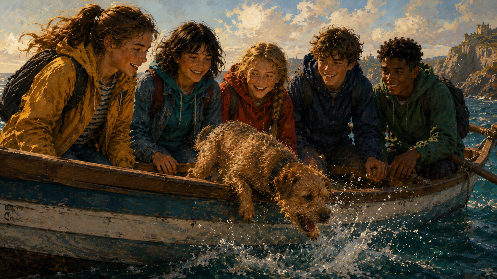
All through the evening the children could talk of nothing else. The great storm had thrown up the old wreck of George's great-great-grandfather's ship — thrown it up out of a hundred and fifty years under the water, and set it on the rocks round Kirrin Island for anyone to see.
"We must go on board," said Julian for the twentieth time. "First thing in the morning. We cannot wait."
"If the sea is calm enough," said George, who was pink in the cheeks with excitement. "Those rocks are not safe when there is a swell."
Aunt Fanny was not very happy about it. She did not like the thought of the children clambering over an old slippery wreck, with wood that had been dead under the sea for longer than anyone could remember. But George begged, and Julian promised to be careful, and in the end she said yes — on condition that they took Alf the fisher-boy with them in his own boat to wait close by, in case of trouble.
They were up at six o'clock. The sea was flat and calm — the storm had blown itself right out — and the morning sun was already warm. Alf rowed alongside in his own fishing boat, with a bucket of lines and a quiet half-smile. He was a man of few words, as fisher-boys often are.
They came round the north point of Kirrin Island and there, in the shallows, was the wreck. In the morning sun it looked much bigger than it had done in the dying storm the evening before. The hull was black with wet weed. The three stubs of broken masts rose crookedly out of the deck. One side of the ship had been eaten away by the sea almost down to the keel; the other side, lifted up on the rocks, still showed curved ribs and planks and a bit of what might once have been painted trim.
"Can we get aboard?" asked Dick, his nose almost over the side of the boat.
"We can," said George, "if we are careful. Hold my boat steady — like that. Julian, go first — you have the longest legs."
Julian stepped from the little boat on to a flat weed-covered rock, then from the rock to the slanted deck of the wreck. The old wood sagged a little under his weight but held. He turned, braced himself, and gave Anne his hand. One by one the four of them climbed aboard. Timmy, who did not like the slippery wood, barked once from the boat below and lay down to wait.
The deck was slanted so steeply that they had to walk at a careful angle, holding on to anything that would hold them. Everything was dripping. Dark red crabs scuttled out of the way of their feet. Green bladder-weed hung in long rags from the broken rail. There was a smell of old salt and wet old wood that none of them would ever forget.
"Here is a door," said Julian suddenly. He had reached the back of the ship, where a low, square doorway opened into the dark. "This must be the captain's cabin. Mind your head, Anne."
They ducked in. Inside, it was like stepping into a drowned room. The walls were green with weed. A broken wooden chair lay on its side. The ribs of what had once been a writing desk stuck up out of the mud. A tin plate, green with age, had rolled into a corner. A rusty iron hook hung from the roof, where perhaps a lantern had once hung.
"There's nothing in here," said Dick, after a minute. "Only broken wood."
"Wait a moment," said Anne quietly. She was the smallest, and she had bent down to look under a slanted plank that had once been part of a bunk. "There is something here. In the corner."
The others crowded round. Pushed back under the bunk, half-covered by a lump of swollen wood, was a small, dark, square shape. Julian reached in and worked it free. It was a wooden box, about the size of two bricks laid together, bound round with thin iron bands green with age. It had a small iron lock on the front.
When Julian lifted it, it was heavier than it looked.
"Oh," whispered Anne. "What is in it?"
"Something," said Julian, carefully, "that somebody wanted to keep safe. Someone put this box in the captain's cabin and bolted the lid down, and then the ship went down with them. Nobody has touched it since. George — this is yours. It is from your family's ship."
George took the box. Her hands were shaking a little. She looked at Julian and then at Dick and then at Anne, and then she said very firmly:
"We take it back to Kirrin Cottage. We open it ourselves. We tell nobody. Not Mother. Not Father. Not Alf. Nobody except the four of us. Promise?"
"We promise," said all three cousins at once.
They climbed back down from the wreck as carefully as they had come up. Alf raised a hand from his boat and did not ask what they were carrying. On the way home Anne sat with the heavy box on her lap, with Aunt Fanny's blue-and-white picnic cloth laid over it so Alf could not see.
"Tonight," said Julian in a low voice, when the harbour came in sight. "After supper. We open it in George's room, with the door locked."
— End of Chapter 5 —
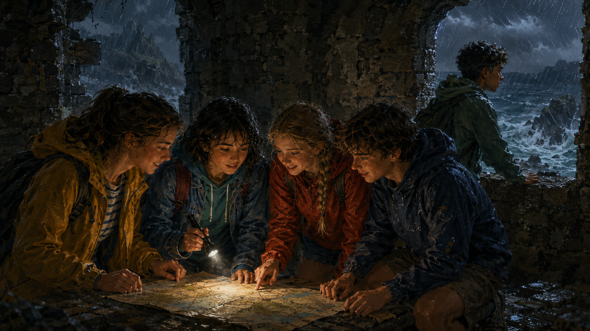
The children sat round the kitchen table and looked at the small, square wooden box. It was still dripping a little from its night under the sea. Aunt Fanny and Uncle Quentin were safely in the sitting-room, with the door closed and the wireless on. George had bolted the kitchen door from the inside. Two candles stood on the table, because the overhead light felt too bright for a secret.
"Right," said Julian in a low voice. "The lock is iron and it is black with rust. I shall try my pocket knife first. If that fails — the chisel."
The pocket knife did fail. So did Dick's. George went silently out to Uncle Quentin's garden shed and came back with a small cold chisel and a wooden mallet.
"Easy," she whispered. "The whole thing is wet — it will split."
Julian put the edge of the chisel under one of the iron bands and tapped. Nothing. He tapped again, a little harder. The old wood gave a soft, dry little crack. He worked round the band, tapping, prying, lifting. In ten minutes, with a last gentle pull, the lid came away from the box altogether and sat loose in his hands.
They all held their breath.
Inside the box was nothing. Or so it looked at first. No gold. No coins. No jewels. Only a single thick packet, wrapped round and round in a piece of old oiled cloth, pushed into the very bottom.
Julian lifted it out as if it were a sleeping baby. Dick held one of the candles close. Anne put her hand on Timmy's back to keep him still. George's blue eyes were very wide.
Layer by layer, Julian unwrapped the oiled cloth. Under the cloth was a square envelope of thick yellow paper. On the envelope, there was no name, no address — only a round seal of dark red wax, cracked but still holding, with the little print of a signet ring pressed into it.
"Shall I break the seal?" Julian whispered.
"Yes," said George, in the smallest voice any of them had ever heard her use.
The wax broke with a tiny snap. From inside the envelope, Julian slid out a single sheet of stiff old parchment, folded four times. He unfolded it on the table.
Four heads leaned in. The candles flickered. For a long second, nobody said a word.
It was a map. A hand-drawn map of a place they all knew by heart. The rough round shape of Kirrin Island. The outline of the ruined castle in the middle. A dotted line running down from one of the castle towers into the ground, deep into the ground, ending at a careful black cross. And beside the cross, in old block capitals that had not faded in a hundred and fifty years, was a single word:
INGOTS
"Ingots," whispered Dick. "That means bars of gold. Doesn't it?"
"Yes," said Julian, in the same low voice. "Bars of pure gold. The gold your great-great-grandfather was supposed to have lost at sea, George. He did not lose it. He hid it. Before he sailed, he carried it ashore, took it into the castle, took it down below the ground, and hid it there. And then he died in the storm, and the secret died with him."
"Under my castle," said George, and her voice was shaking. "Under my island. The gold has been there all this time."
Anne looked at the map with huge eyes. "But what if the castle has fallen in? What if the hiding place is sealed up? What if we cannot even get to it?"
"There is a way down," said Julian, pointing to the dotted line. "The map shows a way. Perhaps old stone steps. Perhaps a passage. Perhaps a well. Something. We shall find it."
George folded the map very carefully. "Nobody knows about this but the five of us," she said. "Nobody. Not Mother. Not Father. Not Alf. Not anyone. We shall go to the island — just the four of us and Timmy — and we shall find the way down. Agreed?"
"Agreed," said Julian, Dick and Anne, all at once.
Timmy, who had been watching their faces, thumped his heavy tail once against the kitchen floor, as if to make it five.
George put the map inside her jumper, next to her heart. She blew out one of the candles. The kitchen seemed suddenly much darker. Outside, the garden was quiet. The sea, far below, made its usual night-time sound against the harbour wall.
Nobody slept easily that night.
— End of Chapter 6 —
The next morning, the four children were sitting round the kitchen table trying very hard to look as though nothing had happened in the world, when they heard the sound of a car coming up the drive. Not a village car, with its familiar coughing engine. A different car. A shiny black car, long and important-looking, that stopped outside the garden gate with a quiet, expensive click.
Aunt Fanny went to the door. George went to the window and looked out from behind the curtain. Timmy stood up, his ears pricked, and gave one low warning growl.
Two men got out of the car.
One was tall and thin, with a long, pale face and black city shoes and a dark city suit. The other was short and heavy, with reddish hair and a thick neck, and the sort of hands that looked as if they had done more than hold a pen. They did not look like men who belonged in a quiet Cornish village. They looked like men who had come from London in a hurry.
The tall one took off his hat as Aunt Fanny opened the door.
"Good morning, madam," he said, in a very polite voice. "My name is Mr Wilton. This is my colleague, Mr Thomas. May we speak with Mr Quentin Kirrin, if he is at home? We have a small matter of business."
Aunt Fanny, who was always kind to strangers, showed them into the sitting-room, and asked George to run and fetch her father from the study. George went, slowly, with her blue eyes very narrow. From the kitchen door, Julian, Dick and Anne watched. Timmy stayed close against George's leg.
Uncle Quentin came out, still in his old grey jacket, with ink on his fingers. He did not look pleased to be disturbed.
"Yes, gentlemen?"
"Mr Kirrin," said the tall Mr Wilton smoothly, "we understand that your family owns a small uninhabited island about half a mile offshore, in the bay — Kirrin Island, I believe it is called. Is that correct?"
"Yes, that is correct," said Uncle Quentin.
"Then we have come to make you a business offer. We would like, with your permission, to buy the island. We represent a small company that is interested in — ah — architectural history. The old castle ruins on the island are of some interest to us. We would wish to study them, and perhaps to restore a part of them, for a book we are preparing. The island itself, as you know, has no practical value — it is only rocks and grass and ruins. But to our firm it would be of some use. We are prepared to pay a very good price. Two thousand pounds, Mr Kirrin."
Uncle Quentin's mouth opened and closed. Two thousand pounds. He had never earned two thousand pounds in his life. For a scientist writing a book of difficult sums, two thousand pounds was more than a year's worry. He glanced quickly at Aunt Fanny, who had gone a little pale.
"Well, I —" he began.
But at that moment George, who had come silently from the kitchen with her hands in fists, spoke up in a voice much louder than her ordinary voice:
"The island is NOT FOR SALE. It is mine. My mother gave it to me when I was six, with a proper paper and a lawyer and everything. It is mine and I will never sell it, not for two thousand pounds and not for ten thousand pounds and not for any money in the world."
There was a long, uncomfortable silence. The tall Mr Wilton smiled a small, cold smile that did not go anywhere near his eyes.
"My dear young lady," he said in a very patient voice, "I am sure you are very fond of your little island. But these matters are for grown-ups. Your father is the gentleman we have come to speak to. Perhaps if we discussed this quietly—"
"My wife is quite correct," said Uncle Quentin suddenly, surprising even himself. "The island was given to my daughter, properly and legally, on her sixth birthday. It is her property, not mine. And if my daughter does not wish to sell, that is her decision. Not mine. Not yours."
Uncle Quentin's long face had gone a dark angry red. He had always had a short temper, and he did not like being spoken to in a smooth voice by a man who had come up his drive without an invitation.
"Good day to you, gentlemen," he said, in a voice that was quite clearly the end of the conversation.
Mr Wilton inclined his head politely, as if nothing had happened. Mr Thomas, the shorter one, gave George a look that was not polite at all. Then they put on their hats, got into their shiny black car, and drove away down the lane. Timmy watched them go, and gave one deep, satisfied growl.
The sitting-room was quiet. Aunt Fanny began, in her usual way, to pick up the empty tea-cups. Uncle Quentin stood staring at the carpet for a long moment. Then he turned to George.
"Why," he said slowly, "would two gentlemen from London drive all the way to Cornwall, in a very expensive car, to offer two thousand pounds for a bare rock and a pile of old stones?"
Nobody answered. Nobody could answer, because the four children knew the answer and had agreed last night to tell nobody. But a small, cold feeling went through all of them, including Timmy. The men were not finished. They would be back.
Later, in the garden, Julian spoke in a low voice.
"They know," he said. "They do not know how much, and they do not know exactly where. But they know something about the gold. Perhaps a letter in some old family paper somewhere. Perhaps a story passed down. Perhaps something written on the wreck itself that they already looked for and could not find. Whatever it is — they know. And they will not give up."
"Then," said George, with that familiar hard set of her mouth, "we must get there first. Before they do. Tomorrow at dawn, we go to the island. We find the way down. We find the ingots. We bring Mother and Father in only when the gold is safe. Agreed?"
"Agreed," said all three cousins at once. Timmy thumped his tail hard against the garden wall.
— End of Chapter 7 —
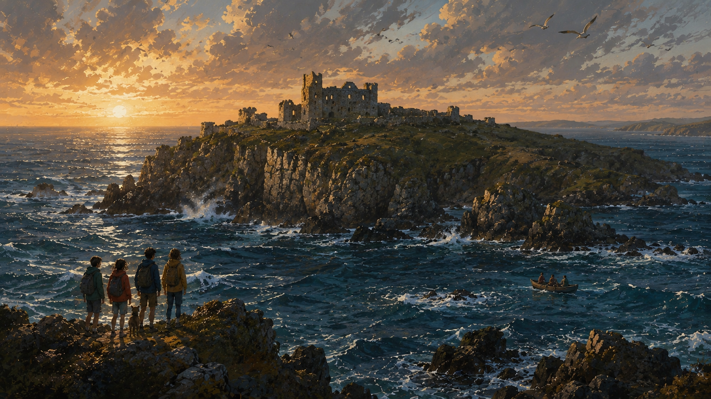
The clock in Aunt Fanny's hall struck four when George tapped very softly on Anne's door. Outside, the garden was grey and quiet. The sea, far below, was flat and silver. Nobody at Kirrin Cottage was awake, except four children and one brown mongrel dog who was waiting under the kitchen table and who could keep a secret better than any grown-up.
They had agreed everything the night before. Each of them had hidden something under their bed before supper. Now they pulled it all out and packed it into two canvas bags. A length of strong rope. Two electric torches, with fresh batteries. Uncle Quentin's old garden spade. A hammer. A bottle of water. A paper bag of thick ham sandwiches that George had made the night before, when her mother was in the bath. The map, folded four times, inside her jumper.
They crept down the stairs on bare feet, carrying their shoes. The front door opened without a creak because Julian had oiled the hinges before bedtime. The garden path crunched a little under their feet. Nobody at the cottage stirred.
Alf the fisher-boy was already up — fisher-boys are always up before the sun — but he was far away at the end of the harbour, mending a net. He did not see them push George's little dark-blue boat out onto the water and climb in. The sea was like a pond.
"I shall row today," said Julian firmly. "You have rowed enough, George. You watch the shore. Watch for any other boat."
George nodded, took her seat at the back, and pulled Timmy down against her knees. Her eyes did not leave the harbour. She was afraid of one thing only — that the two men in the black car had been up earlier than they, and that a second boat was already somewhere ahead of them in the grey dawn light.
Julian pulled on the oars. Dick helped by taking one of them when Julian got tired. The island came closer. Nobody spoke. The only sounds were the small splash of the oars and Timmy's soft breathing. Then they were in the shelter of the island's rocks, and George was pointing — through the gap, round that stone, careful of the shallow bit, now straight in — and the little boat slid up onto the familiar yellow sand of the east cove.
"No other boat," whispered Anne. "We're first."
"Not for long, perhaps," said Julian quietly. "Pull it high up, out of sight behind the rocks. Quickly."
They dragged the boat up above the tide line, hid it with cut ferns, and ran up the little path to the castle courtyard. The grass was wet with dew. The one standing tower of the castle made a long thin shadow across the broken walls. Rabbits watched them from among the stones without moving.
"Right," said Julian. He laid the map flat on a smooth stone and weighted it at the corners with pebbles. The four leaned in. Timmy sat with his nose almost on the paper.
"Look," said Julian. "Here is the castle. Here is the courtyard. Here is the one standing tower. From the base of the tower, this dotted line goes straight down into the ground. The cross is here — maybe fifteen or twenty feet below the courtyard floor. And beside the cross, the word INGOTS."
"But how do we get down?" asked Anne, who was always the one to ask the sensible question. "The dotted line does not show stairs. It does not show a door. It just goes down."
"That is because the way down was secret," said Julian. "If you were hiding a huge amount of gold, you would not draw big arrows pointing to the door, would you? You would hide it. There must be a trap-door, or an old well, or a loose flagstone we have to lift. Something hidden in plain sight."
"Then we spread out and look," said George. "Dick, you take the north wall. Anne, you take the two broken fireplaces. I will walk round the outside and check the base of the tower. Julian, you look at the floor of the courtyard — every stone, every crack. Timmy, you come with me."
They spread out. For nearly an hour nothing was found. The castle was full of old stones, loose stones, stones with grass growing round them, stones with yellow lichen, stones with the small white splashes of gull droppings. They all looked the same. Anne was beginning to be afraid they would be beaten by it.
Then, in a small ruined room on the far side of the tower, Timmy — who had been smelling at the walls on his own private round — stopped suddenly. He put his black nose down to one big square flagstone in the floor, took a careful sniff, and gave a short, excited, muffled bark.
"Timmy's got something!" called George, running. "Julian! Dick! Anne! Over here!"
The three cousins came tearing round the corner, hearts beating hard. George was already down on her knees beside Timmy, pulling the long grass away from the edges of the stone. All round the edge, where there should have been dirt and roots and small flowers, there was instead a very straight, very clean, very dark line — the kind of line that is only made when one stone has been fitted carefully against another and lifted many times.
"Oh my," whispered Julian. "That is not a natural stone."
Timmy wagged his tail very hard.
— End of Chapter 8 —
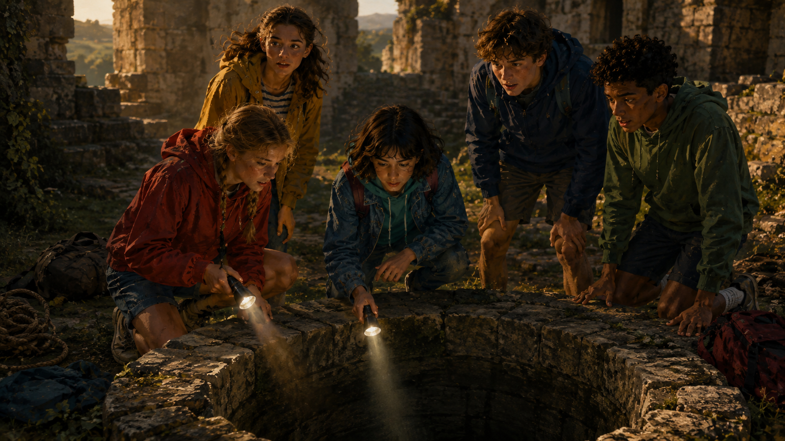
The four children knelt around the big flagstone with Timmy standing on it like a brown statue. George pulled away the last of the long grass. Now that the edges were clear, there could be no doubt. All four sides of the stone had the same clean straight line all the way round, the kind of line that only happens where a stone has been fitted and lifted and fitted again, many times, by people who knew exactly how it worked.
Julian ran his finger along the line. "There is a gap here," he said. "A finger's width. Dick, pass me the spade."
He worked the thin edge of the spade into the gap and pushed down carefully. The stone shifted — just a quarter of an inch, but it shifted. The others gasped. Julian tried the other side. The same little movement.
"It is hinged somewhere," he said. "Dick, help me. Push on the far side when I lift this one."
They pushed and lifted together. Anne held her breath. George gripped Timmy's collar. With a soft dry grating sound, like a very old door opening, the flagstone swung up. It did not come out — it turned on two black iron hinges set into one side of the hole. Thick cold air rushed up out of the ground into their faces. It smelt of old stone and salt and something older still, something sleeping.
Anne stepped back. "Oh — it is so cold down there — "
Julian lay flat on his stomach and shone his torch down into the dark hole. The yellow light fell on grey old stones. On a line of worn steps cut into the rock. On a stone stairway that curved away out of sight into the deeper dark, going down and down.
"A stairway," he whispered. "Just as the map said. It has been down there for a hundred and fifty years waiting for us."
George's blue eyes were wide and shining. "Do we go?"
"Of course we go," said Julian. "But carefully. The map does not show how deep. Dick — pass me the rope. I shall tie one end to that old tree stump at the corner of the wall there. If the stairs give way we have something to hold on to. Anne — stay above with Timmy. If anyone comes to the island — anyone — bark Timmy loudly three times and I will hear."
"I am coming down," said Anne at once, in a very small but very determined voice. "I am not staying up here on my own. I am coming down and so is Timmy."
Julian looked at her. He saw that his sister had been afraid, but had decided not to be. He nodded.
"All right. We all go. Timmy too. Julian first with a torch. Then George. Then Anne — hold the rope with both hands. Dick comes last and keeps the rope above him. Nobody runs. Nobody shouts. If the stairs feel loose — stop. Agreed?"
"Agreed," they whispered.
Julian swung himself over the edge, found the first step with his foot, took a long breath, and went down.
The stairway was narrow. The walls were cold wet stone, with little rivers of water running down between the big grey blocks. The steps were worn into shallow dips in the middle, as if feet had used them for a very long time, long ago. His torch made a small warm yellow circle on the step in front of him. Everything beyond that circle was black.
Twenty steps. Thirty. The stairway curved to the right. The sound of their breathing came back off the walls. Timmy's claws clicked softly on the stone. The air grew colder and more still.
At last the stairway ended. Julian stepped off the last step onto a flat stone floor. He held his torch high and turned round slowly.
They were in a low tunnel. The ceiling was so low that even George, who was not tall, had to bend her head. The walls were close enough on either side that Dick could touch both of them with his hands. Water dripped somewhere ahead, each drop very clear and very slow — plink… plink… plink…
Julian unfolded the map by torchlight and studied it.
"This way," he said, pointing into the darkness ahead. "The cross is at the end of this tunnel. Not far. Maybe fifty paces. Everyone — torches on. Walk one by one. Mind the ceiling."
They set off down the tunnel in single file. Nobody spoke. In a few places the tunnel got narrower and they had to turn sideways to squeeze past old fallen stones. In one place the floor was wet and Anne's foot slipped — Dick caught her elbow at once. Timmy padded along at the back, his tongue out, perfectly happy. He was the only one of them who was not frightened.
Julian turned a last corner. The torch beam ran out ahead of him into a bigger darkness — a space that was not a tunnel any more.
A room.
"Oh," he breathed. "Oh — look."
— End of Chapter 9 —
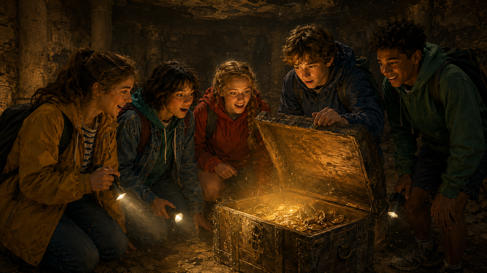
The tunnel opened into a dungeon room — low, square, dry, with four thick stone walls and a vaulted stone ceiling that was just high enough for Julian to stand upright under. Their torches lit the walls in slow yellow circles. For a long moment nobody said a word. The air smelt old, old, old, and somehow metallic — like coins kept too long in a tin.
In the middle of the floor stood a long heavy stone table, like an altar, with the top worn smooth. Beside the table lay a great wooden chest, iron-bound, so old that the dark wood felt almost soft under their fingers. And against the far wall, stacked as neatly and as patiently as if someone had set them there last week —
Row after row of dull yellow metal bars.
"Oh — oh," whispered Anne.
"Ingots," said Julian. "Just as the map said. Bars of gold. Look at them, George. Look."
They were not shiny. They did not look like the gold in children's picture books. They had the slightly brown-yellow look of old gold that has lain in a dry stone room for a hundred and fifty years waiting to be remembered. Each bar was the size of a small loaf of bread. Dick knelt down and touched one. It was cold under his fingers, and very, very heavy.
"I cannot even lift one with one hand," he said. "I need both."
Julian ran his torch along the row. He began to count under his breath. One, two, three, four… twenty, twenty-one, twenty-two… He got to the end of one row and started the next. In the end he counted fifty-two.
"Fifty-two bars," he said quietly. "Each one would buy a whole house. George — your family is rich. Really rich. Not a little bit — a lot."
George said nothing. Her blue eyes were enormous and shining. She reached forward and touched one bar with the tips of her fingers, as if to make sure it was real.
Timmy sat down beside her and pressed himself against her leg, so that she could feel his warm back through her sock. He seemed to understand that this was a very big moment and that his job was simply to be close by.
Anne, meanwhile, had crept forward to the big wooden chest. She lifted the heavy iron lid very carefully — it was not locked — and peered inside.
"Oh! Oh — Julian, Dick, George — look what is in here!"
Inside the chest, wrapped in old red cloth that fell to dust when Anne touched it, lay a silver cup, worked all over with little pictures of ships and dolphins and a scroll with letters she could not read. Under the cup lay three smaller gold bars, thick as her wrist. Under the bars was a leather purse, and when Dick opened it, a small shower of old coins fell out — some bright, some dark, some with strange writing on them that none of them recognized.
"Spanish, I think," said Julian, holding one up. "This one. And this one is older — probably Roman. There is a mix of everything here. He must have been collecting for years before he put it all in."
George still had not spoken. At last she took a long shaky breath and said, very quietly:
"This is the treasure of Kirrin. It is my family's. It has waited here under my castle for a hundred and fifty years. And now it is ours."
Then she sat down on the stone floor, put her arms round Timmy's neck, and did something that none of the three cousins had ever seen her do before. She cried. Not loudly. Not the way Anne cried. Just two slow silent tears, running down her brown cheek into Timmy's thick fur. Timmy licked her ear and did not move.
Nobody said anything for a long moment. Julian turned off his torch to save the battery; Dick's torch still gave the room a soft yellow glow. Through the open end of the tunnel behind them, the wind of the castle made a very soft sound in the stones.
Then Timmy's ears went up.
He turned his head sharply towards the tunnel they had come down. His whole body stiffened. The hair along his back lifted into a thin dark line. From deep in his throat came a low, warning growl.
"Tim?" whispered George. "What is it, boy?"
The four of them stopped breathing to listen. For a second — nothing. Then — from far away up the tunnel, where the stone stairway came down — the unmistakable sound of men's voices, and the soft echo of boots on wet stone.
Two voices. Men's voices. Coming down.
George's face went very white in the torchlight.
"The two men," she whispered. "From the shiny black car. They have followed us. They must have been watching the island all morning."
Julian swung his torch round the dungeon. There was no other door. No other tunnel. No window. Only the one way in — and the one way in was also the one way out, and the men were already blocking it.
They were trapped.
— End of Chapter 10 —
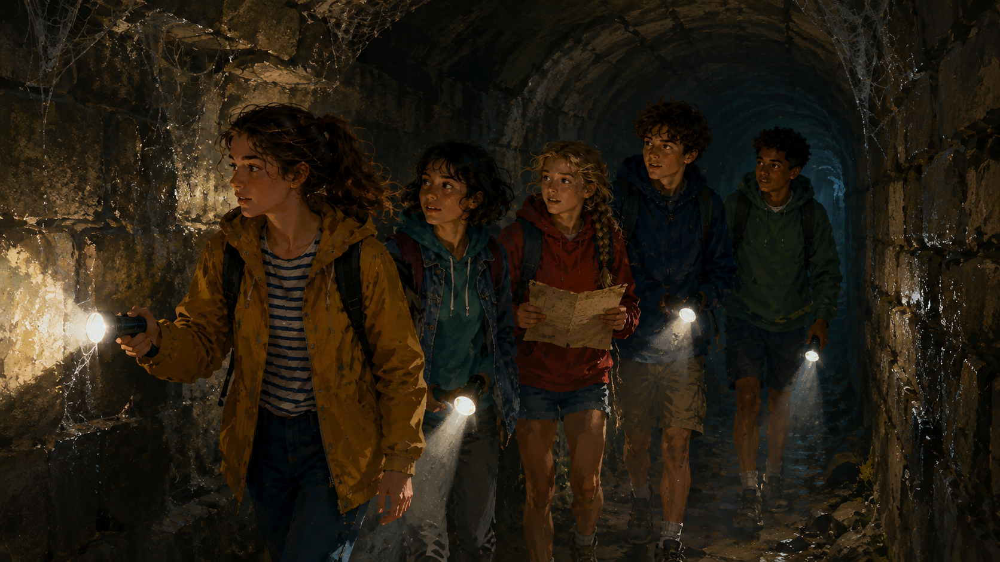
"Hide!" whispered Julian, and in two seconds all four of them had slipped round the back of the great wooden chest, pressed flat against the far wall of the dungeon, with Timmy crouched tight against George's knees. Julian clicked off his torch. Dick clicked off his. The dungeon went completely black.
The men's voices and the yellow bob of their lamp came down the last of the tunnel. One of them was out of breath. The other was laughing — not nicely, but the way men laugh when they have won.
"Through here, Thomas. I told you the children were on to it. Hurry up with that lamp."
The two men stepped into the dungeon. The lamp lit the far wall. For a long second there was no sound from them — only a soft, almost childish, in-breath of surprise. Then the tall thin Mr Wilton gave a short dry laugh and said, in a very different voice from the smooth polite voice he had used at Kirrin Cottage:
"Oh, my word. Oh, my word, Thomas. Look at them. They are all here. All fifty of them, just stacked up as if a man had put them down yesterday. We shall be rich as kings, old boy."
Mr Thomas, the short heavy one, bent down and picked up a bar in each big hand. "Heavy," he grunted. "Pure, I bet."
From behind the chest, Anne forgot herself for a second and gave a very small frightened squeak. In the dead silence of the dungeon it sounded like a shout. Both men froze. Mr Wilton's lamp swung round.
"Who is there? Come out. Come out at once, or it will be the worse for you."
There was no point in hiding. Julian stood up slowly, with his hands open, so the men could see he had nothing in them.
"We are only four children," he said, as politely as he could. "Please do not be angry."
The two men were angry. Very angry. Mr Wilton's long thin face went white, then red, then white again. Mr Thomas took a short step forward with his big hands balled into fists. Timmy, until that moment hidden against George's leg, chose that exact second to come out from behind the chest, head low, back hair standing up, lips drawn back, in the full, terrible dog-growl of an animal who has decided to defend his family.
Mr Thomas took a very quick step backwards.
"George," Julian said sharply, "send Timmy for Alf. Now."
George understood in a flash. She bent down to Timmy's ear and said in a hard, clear voice that was almost a bark itself:
"Alf, Timmy. Alf. Go. Fast as you can. Alf."
And she gave him one hard push away from her towards the tunnel.
Timmy was gone like a brown-and-white streak of light, straight past Mr Wilton's legs, up the dark tunnel, scrabbling with his claws on the wet stone, before either man could grab for him. They heard him going up and up and up the stairway. Then — nothing.
Mr Wilton swore quietly under his breath.
"That dog will bring the whole village down on us in an hour. We work fast, Thomas. Fast. Carry up as many bars as we can. Then we lock the children in and go."
"Lock them in?" cried Anne, her small voice high with fear.
"My dear girl," said Mr Wilton, in a voice that was horribly polite again, "we cannot have you running to your Uncle Quentin, now can we? When your dog brings the fisher-boy back and he opens the trap-door, you will all come out quite safely. By then we shall be a long way away. Nobody will be hurt. Simply — nobody must follow us for the next few hours. That is all."
The two men worked in a hurried, greedy sort of way. Mr Thomas carried the heavy chest up the tunnel first — Dick could hear him grunting as he went. Then they came back and took the ingots, as many as they could carry, two at a time, up the tunnel and up the stairway and out. It took them more than an hour. Nobody from the four children said a word; they sat against the back wall with their arms around each other and watched, by the light of one lamp Mr Wilton had left on the stone table, as the row of bars slowly got smaller.
At last Mr Wilton came back down for the final time. He gave the dungeon a long, satisfied look.
"Right. We leave the rest for another day. Children — sit tight. Remember: Alf will come. You will not die. You will only have an uncomfortable afternoon."
He went up the tunnel. The four of them heard his boots on the stone stairway, growing fainter and fainter. Then — a long moment of silence. Then — far above — the heavy, grating sound of the flagstone being lifted and swung back down into its hinges. A soft thump as it settled. Then — silence.
A silence as thick and as cold as the dungeon walls themselves.
Anne put her face into Julian's jumper and began to cry very quietly. George's hands were tight fists against her sides, but she did not cry. Dick, who was always the practical one, picked up Mr Wilton's forgotten lamp and set it on the stone table so they could all see each other.
"Right," he said quietly. "Timmy is going. Timmy is clever. Timmy is fast. Timmy knows the way to Alf. And when Alf sees Timmy come running up the harbour wall without George, he will know something is very wrong indeed. Alf will come."
"Alf will come," said George, almost to herself.
"Alf will come," whispered Anne.
And in the small warm circle of the stolen lamplight, the four of them sat down to wait.
— End of Chapter 11 —
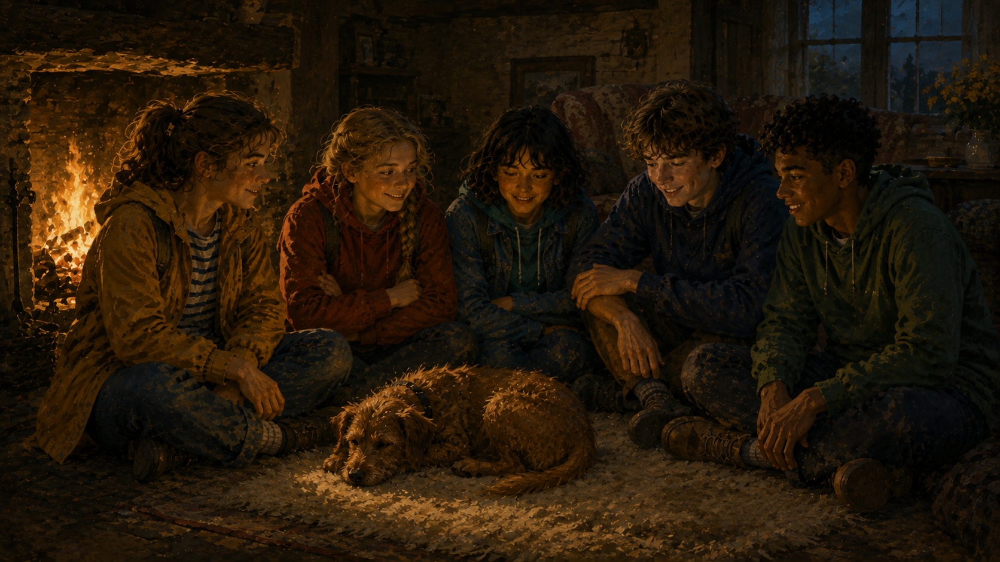
While the four children sat down to wait in the dungeon under the castle, something was happening at Kirrin Harbour that none of them could see. Timmy had done exactly what George had told him to do. He had shot up the tunnel. He had shot up the stone stairway. He had thrown his whole brown-and-white body against the heavy flagstone — and had bounced off, because the men had put a stone on top of it, just as they had promised. For one second Timmy had sat panting in the dark, thinking.
Then — because Timmy, as George had always said, was far cleverer than most dogs and quite a lot of people — he had turned round and gone the other way. He had scrambled up a narrow crack between two castle walls that only a dog could use, squeezed through a broken window where the stones had crumbled, and dropped down into the long grass of the courtyard. Three seconds later he was running flat out for the little east cove where the Five had hidden their boat.
The boat was still there. But Timmy did not need a boat. Timmy ran straight into the sea.
Timmy could swim like an otter. He had been doing it since he was a puppy on the moors. He pointed his big brown head towards the harbour wall, lifted his tail into the air, and swam. The waves were still a little rough from the storm of two days before, but Timmy did not mind the waves. In twenty minutes he was pulling himself up the harbour steps, dripping with cold water and smelling of seaweed.
Alf the fisher-boy was mending a net at the end of the pier. He looked up. He saw a wet, breathing-hard, extremely serious brown mongrel pulling himself out of the sea without George. Alf dropped the net.
"Tim? Timmy — where's George? Where's Miss George? Timmy, boy, show me — "
Timmy did not bark. He did not jump. He stood in front of Alf, pulled hard at the sleeve of Alf's coat with his teeth, and dragged him three steps towards the harbour wall and the road up to Kirrin Cottage. Then he looked back over his shoulder.
Alf was not a boy who needed to be told twice.
"Right. Right. We go to the cottage. Mrs Kirrin. Fast."
They ran all the way, Alf's bare feet thudding on the dusty lane, Timmy flat out in front. At Kirrin Cottage Alf hammered on the door. Aunt Fanny opened it and went white as a sheet when she saw Timmy without the children.
"Mrs Kirrin, something is bad wrong at the island, m'am. The dog came swimming across on his own. Something is bad wrong."
Aunt Fanny called Uncle Quentin. Uncle Quentin took one look at the dog and did not waste any time at all. He went straight to the telephone in the hall and rang the police at the nearest town. He described the two men in the shiny black car. He described the island. He said, very loudly and very clearly, that two gentlemen from London had tried to buy the island two days ago at a very suspicious price, and that his daughter and his nephews and niece were now missing on that island, and that he would be obliged if a car could be sent at once.
A police car came within fifteen minutes. One of the police officers knew the coast very well — his uncle had been a Kirrin fisherman himself years before. He listened to Alf, looked at Timmy, and nodded.
"If those two have been fetching heavy things off the island this morning," he said, "they will not have gone far. They will be loading up a lorry somewhere quiet — the next cove down, probably, where the little road meets the sea. Let us try there first."
And that is where the police found them. The two men were still on the beach of the next cove, trying to lift the heavy wooden chest onto the back of a small grey lorry with the help of a hired driver. Beside the chest were the forty-six gold ingots they had carried up from the dungeon. Mr Wilton tried to run. The sergeant caught him within thirty yards. Mr Thomas sat down heavily on the sand and said nothing at all.
Meanwhile, in another car, Alf, Uncle Quentin and two more officers rowed across to Kirrin Island with Timmy at the front of the boat barking in sharp, excited little barks, pointing with his whole body. Timmy led them straight across the courtyard to the big flagstone. The stone the men had put on top was heavy, but Uncle Quentin and the two officers lifted it off between them. The flagstone swung up on its old iron hinges. A cold breath of air came out of the hole.
"Children!" called Uncle Quentin, and for the first time in all four of their lives, his voice shook a little. "Children — are you there? It is all right! You are all right! Come up!"
From the dark below came a shout — four shouts — and the sound of running feet on worn stone steps. One by one, four dusty, cold, hungry, perfectly-alive children climbed up out of the hole into the warm afternoon sunlight. Anne burst into tears again, but this time from happiness. Dick kept blinking in the sudden brightness. Julian shook the sergeant's hand very gravely and said, "Thank you very much, sir." And George — George, who did not cry — dropped on her knees in the long grass and hugged Timmy so hard she nearly knocked him over, and this time she did cry, a little, into his wet fur. Timmy licked her ear and tried very hard not to look proud.
Back at Kirrin Cottage, Aunt Fanny lit the fire even though it was summer, because that was the sort of day it had been. She made cocoa for all four children, and buttered a whole fresh loaf, and did not even scold George when George said that of course Timmy must sleep in her room from now on. Uncle Quentin sat down at the kitchen table with the sergeant and worked through the long story slowly, piece by piece.
In the end, the fifty-two gold ingots, the chest, the silver cup and the old coins were all recovered. The lawyers took a long time about it, but it was quite clear in the end that the gold had belonged to a Kirrin and had been found on a Kirrin's island and was therefore the legal property of a Kirrin — specifically, Miss Georgina Kirrin, aged eleven. Most of the gold went into a trust at the bank, to be kept for George until she was twenty-one. A fair share also came to Uncle Quentin, enough to let him finish his book of long sums without worrying about the butcher's bill ever again, and enough left over to buy Aunt Fanny the new kitchen stove she had wanted for seven years.
Uncle Quentin kept his promise about Timmy. From that day, Timmy was a Kirrin Cottage dog. He had his own basket in the kitchen. He was allowed everywhere except Uncle Quentin's study. On the first evening of his new life as a house-dog, he lay full-length in front of the fire like a small warm lion, and did not move until bed-time.
Later that week George and Anne agreed, between them, that they would both go to the same boarding school in September — the kind that let dogs come to visit at weekends. Aunt Fanny tried very hard not to smile when George said this. She did not quite manage it.
On the last evening of the holiday, the four cousins sat together on the low garden wall above the cliff, with Timmy warm across their four pairs of feet. The sun was going down over Kirrin Bay. The island was gold in the last light. Nobody said very much. There was no need to.
"We are the Famous Five," said Anne at last, in her small clear voice. "That is what we are. And this was only our first adventure."
Timmy thumped his tail three times, which meant yes.
— The End —
Enid Blyton · Five on a Treasure Island · 12 chapters · Vereshchagina Reader 7 adaptation.
Next: Five Go Adventuring Again — Book 2 in the series.